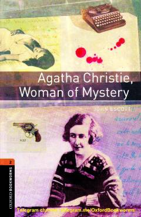

ACAgata Kristining hayoti va ijodi haqida ingliz tilidagi soddalashtirilgan biografik kitob.
Ushbu kitob dunyoga mashhur detektiv yozuvchi Agata Kristining hayot yo'li va ijodiy faoliyati haqida ma'lumot beradi. Unda yozuvchining shaxsiy hayotidagi sirlar, uning mashhur asarlari va qahramonlari yaratilishi sodda ingliz tilida bayon qilingan.